Le jeu est basé sur des "faits réels".
Il est raconté que, lors d’un crash d’avion dans la jungle colombienne, seuls quatre enfants auraient survécu.Ces quatre enfants auraient survécu seuls pendant 40 jours, complètement perdus. Ils ont tout de même réussi à trouver de la nourriture, à construire des abris et à résister aux pluies tropicales.
Bien sûr, il n’existe aucune preuve que cela ait réellement eu lieu.
C'est donc un mythe :-).
Beaucoup de personnes utilisent cette histoire pour promouvoir leur jeu (on appelle ça du marketing).
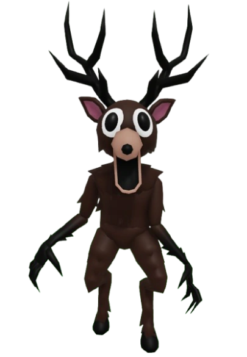
Les grands méchants du jeu.
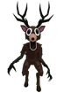
Le cerf Le hibou
Le hibou
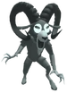
Le boucLes Règles du jeu.
- Le but : survivre 99 nuits dans une forêt dangereuse…- Votre mission : retrouver quatre enfants perdus, éparpillés à travers la jungle.
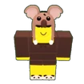
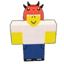
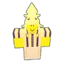
Pendant la journée, c’est le moment de collecter des ressources (bois, nourriture, charbon, etc.), d’explorer la forêt (structures, coffres, loot), de fabriquer des objets ou des défenses, et de préparer le camp.
La nuit, des créatures viennent vous attaquer (les cultistes et le cerf).
Il existe plusieurs types d’animaux qui infligent des dégâts pendant la journée :
Dans la forêt
 Loups
Loups
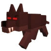
Loups alpha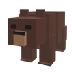
OursDans le byome neige
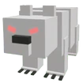
Ours polaires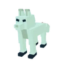
Renards des neigesDans le byome volcan
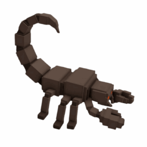
Scorpions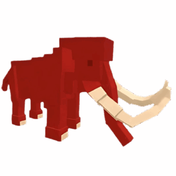
Mammouths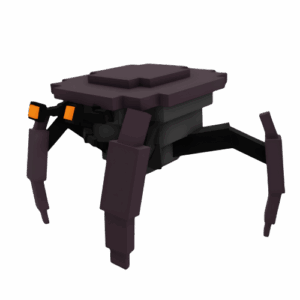
Crabes météoresSuivant
Précédent

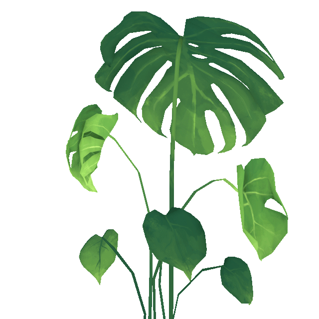